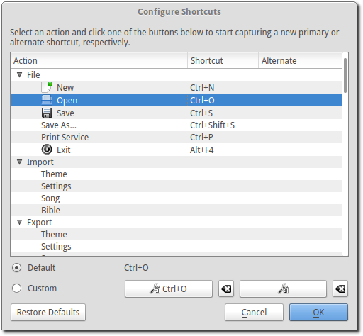

Customize Shortcuts
OpenLP gives you the ability to use keyboard shortcuts either by changing the default primary ones already assigned or by adding an alternate shortcut that will work alongside the primary shortcut.
To Configure Shortcuts go to
The image below shows a partial list of shortcuts you can customize.
Across the top of the list are Action, Shortcut and Alternate.
- Action:
- This is the name of the of the shortcut you can change. It could be part of the menu selection or a toolbar item.
- Shortcut:
- This is the keyboard shortcut assigned to the action beside it.
- Alternate:
- This is the alternate shortcut you can assign to the action. Each Action can have two different shortcuts assigned to it.
Changing a Shortcut
 Capture shortcut:
Capture shortcut:- To change a shortcut click on an Action in the list that you would like to
modify. Click on the left to add or modify the default
shortcut and the right to modify or add an alternate
shortcut. After you click on one of the boxes you can type in the key or
combination of keys you want to use for your shortcut.
- Restore the default shortcut of this action:
- If you are not happy with your shortcut selection you can restore it to its default value by clicking the icon next to the shortcut. This will set the shortcut to its original state.
If there is a shortcut you want to remove from an action and not assign another
one you can click on twice. This will remove the shortcut.
All Actions that you click on will show either Default or Custom.
If you change or add any shortcut the option button for Custom will be selected. Clicking the Default option button will restore the original shortcut. You can also click to change it back to default.
If you don’t like any of your changes or find that you want to return the shortcuts back to their original settings, click Restore Defaults.
When you are done making your changes click OK. If you don’t want to save any of your changes click Cancel